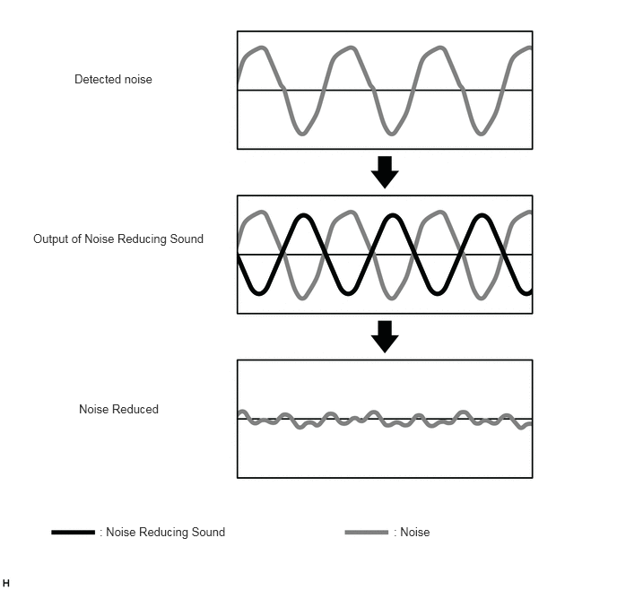

- Calculates the noise based on the noise inside the vehicle cabin detected by the active noise control microphones, the engine speed and the vehicle condition signals input from each ECU via CAN communication, and generates a noise reducing sound and outputs a control sound to the front No. 1 speaker assembly (LH/RH) and rear speaker assembly (LH/RH) to reduce the noise.*1
- Calculates the noise based on the noise inside the vehicle cabin detected by the active noise control microphones, the engine speed and the vehicle condition signals input from each ECU via CAN communication, and generates a noise reducing sound and outputs this sound to the stereo component amplifier assembly to reduce the noise.*2
- Generates enhanced engine order component sound based on the engine speed and information about the driving conditions received from various ECUs via CAN communication, and outputs it to the stereo component amplifier assembly.
| Last Modified: 10-07-2025 | 6.11:8.1.0 | Doc ID: NM100000002GLB2 |
| Model Year Start: 2024 | Model: Tacoma | Prod Date Range: [12/2023 - ] |
| Title: AUDIO / VIDEO: ACTIVE NOISE CONTROL SYSTEM: ACTIVE NOISE CONTROL; 2024 - 2026 MY Tacoma Tacoma HV [12/2023 - ] | ||
ACTIVE NOISE CONTROL
FUNCTION OF MAIN COMPONENTS
|
Component |
Function |
|---|---|
|
*1: Models without stereo component amplifier
assembly
*2: Models with stereo component amplifier assembly *3: When an audio source sound is input, the sounds are mixed and output. |
|
|
Stereo Component Equalizer Assembly |
|
|
Active Noise Control Microphone |
Detects noise inside the cabin of the vehicle and outputs it to the stereo component equalizer assembly. |
|
Stereo Component Amplifier Assembly*1 |
|
|
Front No. 1 Speaker Assembly LH/RH |
Outputs the noise reducing sound to reduce noise and enhanced engine order component sound to enhance the engine sound. |
|
Rear Speaker Assembly (LH/RH)*1 |
|
|
No. 1 Speaker Assembly with Box*2 |
|
|
Audio Head Unit (Radio and Display Receiver Assembly) |
|
|
ECM |
Outputs the engine pulse signal to the stereo component equalizer assembly. |
|
Brake Actuator Assembly
|
Sends the vehicle speed signal to the stereo component equalizer assembly via CAN communication. |
SYSTEM CONTROL
(a) ANC Function
(1) The stereo component equalizer assembly uses information from various ECUs and microphones to detect noise inside the vehicle cabin to generate a noise reducing sound which is an audio signal with an inverted phase to the noise.
(2) The noise reducing sound generated by the stereo component equalizer assembly is amplified by the stereo component amplifier assembly and output by the front No. 1 speaker assembly LH/RH, front No. 2 speaker assembly and No. 1 speaker assembly with box to reduce noise in the vehicle cabin.
Noise Reduction
(b) ESE Function
(1) The stereo component equalizer assembly uses information from various ECUs to generate an enhanced engine order component sound which reinforces the sound of the engine.
(2) The enhanced engine order component sound generated by the stereo component equalizer assembly is amplified by the stereo component amplifier assembly and output by the front No. 1 speaker assembly LH/RH, front No. 2 speaker assembly and No. 1 speaker assembly with box to reinforce the engine sound.